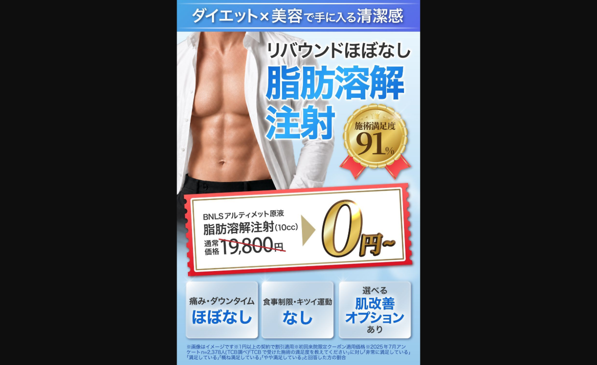
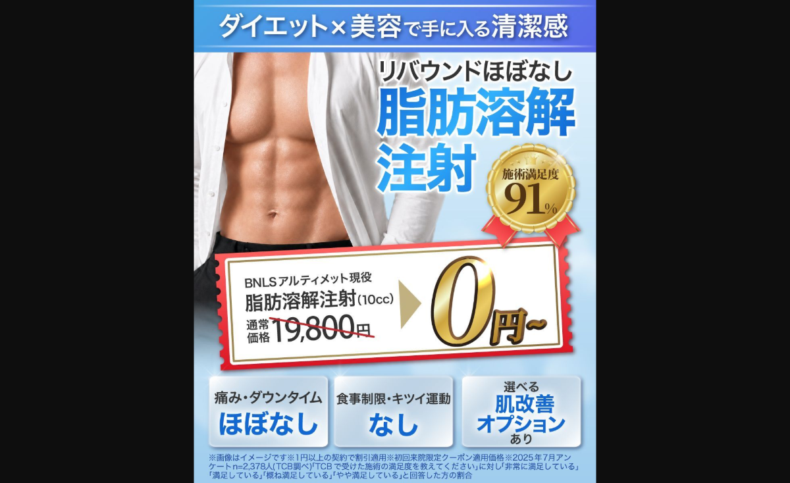
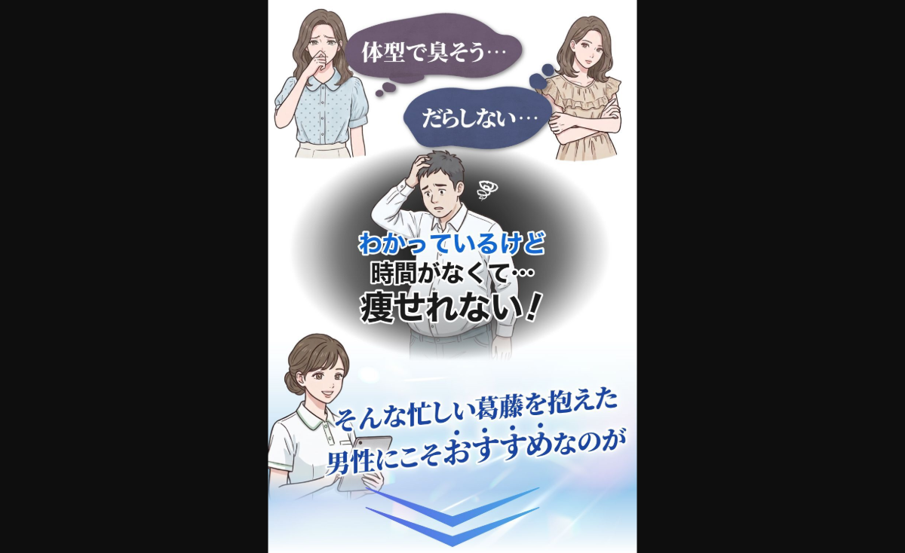

TCB脂肪溶解からだ男性 記事が売れている理由まとめ
対象記事：TCB脂肪溶解注射/からだ男性向けステップアンケートLP。制作背景、男性向けへの再設計、FV、アンケート、教育、CTA、後半クロージングまでの勝ち理由を整理。
結論
この記事の勝ち筋は、女性商材で当たっていたステップアンケート型の骨格を残しつつ、中身を40代以降の社会人男性の心理に合わせて作り直した点にある。
男性向けでは、美容施術との心理的距離が女性より遠い。そのため、悩みに共感するだけではなく、「これなら課題解決できそう」「なぜ効くのか分かった」「仕事や生活に支障がなさそう」「男が行っても大丈夫そう」という順番で、効果・信頼・行動ハードルを潰している。
1. 制作判断
今回の記事は、TCB脂肪溶解注射/からだ男性向けの記事。自社では5月時点で件数がほとんど取れていなかった一方、他社はMetaで月間1,000件以上獲得していた。つまり、市場としては取れる商材であることが見えていた。
既存記事の効果感が弱かったため、新しい記事制作の依頼が発生した。裏テーマは、男性商材でも売れるステップアンケート記事を作ること。アクシス記事部では、ステップアンケート型LPは女性商材では複数当たっていたが、男性商材ではまだ跳ねていなかった。
そこで、ステップアンケートという骨格自体は男女問わず人間に機能するはずだが、男性向けでは中身の設計がズレていたのではないか、という仮説を立てた。
競合と同型で戦わなかった理由
既に他社、特にトライスピードが脂肪溶解からだ男性で件数シェアを取っていた。トライスピードの記事LPをそのまま横展開する選択肢もあった。
ただし、5月時点では自社のMeta広告アカウントに脂肪溶解からだ男性のCV情報がほとんど溜まっていなかった。学習が溜まっていない状態で、競合と同じ訴求・同じ記事フォーマットで配信すると、既に他社が学習を持っているパイに正面から取りに行くことになる。
そのため、まずは競合と同じフォーマットで戦うのではなく、あえてステップアンケート型でフォーマットをズラし、件数を獲得してMeta広告アカウントの学習を回すことを優先した。
2. 準備段階：ペルソナ設計
制作前に、ターゲットのペルソナを具体化している。単に「男性向け脂肪溶解」と広く捉えるのではなく、どの年代・どの体型悩み・どの生活背景の男性を取りに行くかを先に固めた。
参考にしたのは、過去にクラウドワークスで取得した40代以降男性向けアンケートと、広告制作部との会話。アンケートでは、体型で気になるシーン、これまでやってきた対策、医療行為に対するイメージを確認した。制作部には、どんな年代・どんな悩み・どんな人に向けたクリエイティブを作ろうとしているかを確認した。
初期の想定は、40代以降の男性で、悩みはお腹。ただし、バキバキの腹筋を本気で目指すというより、一般的なサラリーマンが「ぽっこりお腹がスッとする」「見た目に清潔感が出る」くらいの現実的なベネフィットを想定していた。
一方で、トライスピードの記事では腹筋がバキバキの画像を使っていた。それを踏まえ、記事側・クリエイティブ側の認識として、ベネフィット表現はある程度バキバキ寄りに見せる方針に修正した。ただし、デモグラは40代以降の社会人男性からブレさせていない。
ペルソナ設計が反映された箇所
| 設計箇所 | 反映内容 | 狙い |
|---|---|---|
| サブオファー | 痛み・ダウンタイムほぼなしを、翌日から仕事に戻れるという生活ベネフィットに翻訳。 | 仕事に支障が出るかを気にする社会人男性の障壁を下げる。 |
| 男性モデル | 単なる上裸バキバキ男性ではなく、ワイシャツを脱いだ男性を複数配置。 | 仕事終わり、服を脱ぐ、見られる場面の未来像を想起させる。 |
| ベネフィット | 痩せるだけでなく、清潔感、女性からの印象、服が似合う、自信に接続。 | 体重減少ではなく、社会的印象の改善として自分ごと化させる。 |
| 口コミ属性 | 30代・50代など、働く男性らしい属性を中心に見せる。 | 若い美容好き男性ではなく、自分に近い男性の話として受け取らせる。 |
3. 制作思想：読ませない記事
今回の記事に限らず、制作時の大前提として「読ませない記事」を重視している。ここでいう読ませない記事とは、文章をなくすという意味ではない。テキストを読まないと理解できない構造にしない、という意味。
広告流入の記事LPでは、読者は丁寧に読まない。流し見・斜め読み・直感判断で進む。そのため、差し絵、表情、体型、服装、色、形、チケット風のあしらい、バナー、アイコン、進捗バーなどで、読まなくてもニュアンスが伝わるように設計する。
根拠としては、MITの研究で人は13ミリ秒だけ提示された画像でも意味を識別できることが示されている。また、認知心理学には「picture superiority effect」という考え方があり、画像は言葉より記憶に残りやすい傾向がある。数字を誇張して断定するのではなく、視覚情報は短時間で意味把握されやすく、記憶にも残りやすいと捉えるのが安全。
参考：MIT News “In the blink of an eye” / Semantic Encoding Enhances the Pictorial Superiority Effect
4. 中の構造の大枠
参照元の使い分け
今回の記事では、参照元を1つに絞らず、役割ごとに分けている。
| 参照元 | 使った要素 | 判断理由 |
|---|---|---|
| トライスピードの記事 | ワード選び、素材の見せ方、サブオファーの見せ方。 | 既に脂肪溶解からだ男性で件数を取れているため、売れているディテールは取り入れる。 |
| 医療痩身上位記事 | ビビッドな色味、男性向け医療痩身らしい強い視認性、全体のトンマナ。 | トライスピードのフォーマットではなく、医療痩身市場で売れている見え方に寄せる。 |
| 自社二重女性ステップアンケート | ステップアンケートの骨格、回答しながら心理を進める導線。 | 女性商材で当たっていた型の骨格を、男性向けに再設計して使う。 |
型
骨格はステップアンケート型。女性商材で複数当たっていた型であり、「答えながら自分ごと化する」「段階的に心理を前に進める」という意味では、男性にも機能するはずだと判断した。
ただし、女性向けで当たった型をそのまま持ってきたのではなく、男性の行動心理に合わせて中身を作り直している。
デザイン
トンマナはトライスピードではなく、リードのダイエットジャンル全体、特に医療痩身で売れている記事から持ってきている。男性向け医療痩身の上位記事で使われている、少しビビッドな色味や強めの視認性を採用した。
コピー
フォーマット自体は競合とズラしているが、ワード選びや素材の見せ方など、内容のディテールはトライスピードを参考にしている。売れている記事の言葉や素材の見せ方は持ってきてよいと判断した。
ただしコンセプトは少しズラしている。サブオファーとして選べる肌改善オプションがあり、ペルソナが40代以降の見た目の清潔感を気にしている男性なので、単に「痩せる」ではなく「ダイエット×美容で清潔感が手に入る」を前面に出した。
5. パートごとの詳細解説
5-1. ファーストビュー



FVでは、医療痩身上位の男性記事に近いビビッドカラーを採用している。チケット風の価格表示で、0円〜のオファーを強く見せている。
コンセプトは「ダイエット×美容で手に入る清潔感」。脂肪溶解注射を単なる痩身ではなく、40代以降男性が欲しい見た目の印象改善まで広げて見せている。
下部には、痛み・ダウンタイムほぼなし、食事制限・キツイ運動なし、選べる肌改善オプションあり、という3つのサブベネフィットを配置。クリエイティブで言っているサブオプションやUSPをFV内でも復習させ、スクロールする心理的ハードルを下げている。
5-2. FV下の誘導バナー
FV下には、矢印だけではなく、バナー型の誘導を置いている。デザインが綺麗な上位記事では、単なる矢印ではなく、しっかりバナーで次の行動へ誘導していることが多いため、それに合わせた。
バナー内には、ほっそりした男性の身体とTCBの金チケットを配置。この先に進むと、痩せた身体と特別クーポンが手に入るという期待を作っている。
5-3. Q1：悩みシーンの自分ごと化
Q1では「どんな時に体型が気になりますか？」と聞き、ズボン・スーツがキツい、お風呂に入った時、ダイエットしても効果を感じない時を選ばせている。
これは、40代以降の社会人男性の日常に即した悩みシーン。女性向けのように感情へ深く寄り添うというより、生活の中で課題を認識する瞬間を選ばせて、自分ごと化させている。
5-4. Q2：期待形成質問
Q2の「どんなふうに痩せられたら嬉しいと思いますか？」は、長く回っているジュノビューティークリニックの男性向けスリム治療系の記事から引用している。
選択肢は、食事制限がない、キツイ運動がない、薬を服用しない、すぐにリバウンドしない。これはただ理想の痩せ方を聞いているだけではない。
読者は広告やFVの時点で、「自分が知らない、医療で簡単に痩せられる方法があるらしい」という期待を持って入ってきている。その状態でQ2を置くことで、「本当に食事制限なく、運動なく、薬もなく、リバウンドもしにくいのか？」という違和感に近い期待感を募らせる。
5-5. Q2後：解決策紹介・効果教育
Q2後には、解決策紹介が入る。まず「そんなあなたにおすすめのレーザーのダイエット」「脂肪溶解注射」として、今回の解決策を提示する。男性は美容クリニックや美容施術との心理的距離が遠く、理解度が薄い可能性があるため、簡単な概要を入れて施術イメージを持たせている。
その後、問題提起として、なぜこれまでの既存認知の解決策では本質的に痩せられないのかを教育する。痩せられない根源の原因として脂肪細胞の数を説明し、既存認知を壊して記事に引き込む。
暗いトーンで原因を説明した後、明るいトーンに切り替え、脂肪細胞を直接破壊できることを赤字で強調する。その後、症例BAを2件掲載し、説明していることの実証を行う。
最後に「清潔感あふれる引き締まった体を目指せる」というベネフィットで教育パートを一度締める。さらに、極細針を使うため傷やダウンタイムがほぼゼロという一文を挟み、Q3へ進む前に施術への心理的ハードルを下げている。
5-6. Q3：USP教育質問
Q3では、読者が「実際にこの施術を受けるかどうか」を検討する段階に入る。選択肢は、クーポン適用で0円〜、翌日から出勤可能、きつい食事制限や運動がない、痩せない原因に直接アプローチできる。
Q3も期待感を煽る質問であり、ただ「どれが嬉しいですか」と聞いているだけではない。施術のUSPを読者自身に選ばせる教育質問になっている。
女性向けでは「脂肪溶解注射で不安な点はどれですか？」と聞くことがある。これは女性が脂肪溶解注射をある程度認知しており、興味はあるが不安で行動できていない前提だから。一方、男性は初見の可能性が高いため、不安を掘る前に「魅力的な点はどれか」と前向きに聞き、USPを理解させている。
5-7. Q3後：TCBのUSP教育・社会的証明
Q3後は、Q3で提示した魅力を実証するようなデータを載せている。さらに、日本形成外科学会専門医が施術していることを入れ、医師・施術者への信頼感を補強している。
その後、来院者数や仕上がり満足度などのエンブレム型の社会的証明につなげる。ここで効果に対する期待感、納得感、クリニックへの不信感を下げ、Q4で未来像を想像させる準備をしている。
5-8. Q4：未来像の想像
Q4では、好きな服をストレスなく着られる、自分の身体に自信がつく、女性からの印象が良くなる、今よりも清潔感が出る、という未来像を選ばせている。
ここでは施術の機能ではなく、読者が本当に欲しい未来を選ばせている。脂肪溶解注射そのものが欲しいのではなく、服が似合うこと、自信がつくこと、女性からよく見られること、清潔感が出ることが欲しい。
5-9. 一回目のクロージング
アンケート完了後に、25,000円OFFクーポン、0円〜、無料カウンセリング/予約CTAを提示し、一度行動を促している。
ここでは初めて、サブオプションを大きい動画素材で訴求している。見せ方自体はトライスピードを模倣しつつ、「清潔感アップ」というワードを加えた。
男性初見ユーザーには施術名を目立たせすぎると分かりづらいため、施術名は抑え、いろいろな美容施術が0円になるという印象を一瞬で与える設計にしている。
美容施術素材の後には、ツルツルの肌で自撮りしている50代男性のカットを入れている。お得な美容施術がついてくるだけでなく、それによって清潔感が手に入り、こういうイケおじになれるという未来像に落としている。
また、ボタンを押した後の画面録画を先に掲載し、CTA後の画面遷移を想像できるようにしている。
5-10. もっと詳しく知りたい後の教育
もっと詳しく知りたいボタンの後は、改めてニーズ喚起、商材/クリニックのUSP教育、口コミによる実証を入れている。前半で行った教育を、角度を変えてもう一度行っている。
前半のニーズ喚起は、脂肪細胞の数というロジック寄りの原因教育。一方で後半では、他人や女性からの見られ方を使っている。体型で臭そう、だらしないと思われるという不安を出し、清潔感や女性からの印象という欲求を再度刺激している。
USP教育では、ジム・美容院感覚で通えるという要素を初めて入れている。美容クリニックは男性にとって心理的距離が遠いため、ジムや美容院のような日常的な行き先に置き換えることで、来院ハードルを下げている。
実証はBAではなく、イメージ写真付きの口コミを3つ並べている。前半のBAは効果の視覚実証、後半の口コミは自己投影と社会的証明。自分に近い男性も効果を感じている、自分が欲しい未来を得ている人がいると思わせる。
最後に、女性スタッフがカメラ目線で写っているカウンセリング素材を置いている。過去の脱毛や医療ダイエットで実績があった、可愛い女性スタッフ・女性店員の要素を一点だけ置き、男性の行動欲求を補助している。
5-11. FAQ・予約導線・最終バナー
後半教育の後には、Q&Aと予約導線の説明を置いている。Q&Aでは、美容クリニックに男が行っても浮かないか、追加料金はあるか、相談だけでもOKかを処理している。
ページ最下部には、「このページを閉じると表示されなくなるかも」という警告色のバナーを置いている。この記事内で、緊急性を煽る要素はここが初めて。
緊急性訴求は、繰り返すほど効果が弱くなる。序盤から置くと、まだ読者の興味や納得が育っていない状態なので、押し売り感が出たり、うまく機能しない可能性が高い。そのため、記事の一番下に一点だけ配置している。
また、詳しく知りたい後の教育は全体的にミニマルかつコンパクトにまとめている。ここまで来た読者は、アンケートもクロージングも超えてきた前のめりな読者なので、簡潔な情報でもモチベーションを再喚起できるという仮説がある。
6. 売れている理由の統合
7. 横展開する時に残すべき要素
- 男性向け美容医療では、商材認知が低い前提で、魅力選択型の質問からUSP教育に入る。
- 女性向けの不安確認型質問を、そのまま男性に持ち込まない。認知段階が違えば質問の聞き方を変える。
- 機能説明は、仕事・服装・女性からの印象・清潔感など、生活上のベネフィットに翻訳する。
- 競合の売れているワードや素材は取り入れてよいが、フォーマットまで同じにするかは広告アカウントの学習状況で判断する。
- 読ませるのではなく、画像・色・形・人物・あしらいで直感的に伝える。
- 後半教育は、前のめり読者向けに角度を変えた再教育にする。長く説明しすぎない。
- 緊急性・損失回避は連発せず、納得が育った最下部に一点だけ置く。
作成日：2026-06-01 / 保存場所：LP制作ディレクトリ